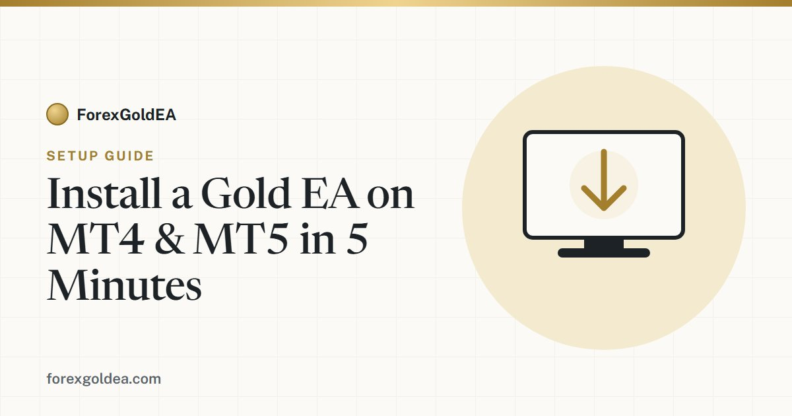

How to Install a Gold EA on MetaTrader 4 & 5 in 5 Minutes

Getting the ForexGoldEA expert advisor running is quick, even if you have never installed an EA before. Follow these five steps and your gold robot will be live on an XAU/USD chart in about five minutes.
Before you start
You will need MetaTrader 4 or MetaTrader 5 installed and logged into a trading account, plus the ForexGoldEA file for your platform. The steps below work the same way on both platforms, with only the folder name differing (MQL4 for MT4, MQL5 for MT5).
The five-minute install
- Copy the EA file. In MetaTrader, open File then Open Data Folder. Go into the MQL4 (or MQL5) folder, then Experts, and copy the ForexGoldEA file into it.
- Restart or refresh. Close and reopen MetaTrader, or right-click Expert Advisors in the Navigator panel and choose Refresh. ForexGoldEA should now appear in the list.
- Attach to a gold chart. Open an XAU/USD chart, then drag ForexGoldEA from the Navigator onto that chart.
- Load a preset. When the settings window opens, load a ready-to-run preset that matches your risk appetite, then click OK.
- Enable auto-trading. Click the Auto-Trading (Algo Trading) button in the toolbar. When the smiley face on the chart is active, the EA is live.
Quick check: If you see a sad face or a small X on the chart, auto-trading is off or the EA is not allowed to trade. Enable the Auto-Trading button and tick Allow Algo Trading in the EA options, and the face will turn active.
Set your risk before you walk away
Before leaving the EA to run, set the risk per trade, a daily loss limit, and a maximum drawdown ceiling in the inputs. These controls are what keep the strategy inside limits you are comfortable with, and the EA enforces them for you automatically.
Run it on a VPS for 24/5 trading
Gold trades nearly around the clock on weekdays. If your computer sleeps or loses connection, the EA cannot manage open trades. A VPS keeps MetaTrader online continuously, so the EA never misses a setup. It is optional for testing, but recommended once you go live.
Ready to install ForexGoldEA?
Get it free with our partner broker, including both the MT4 and MT5 builds plus ready-to-run presets.
Get the EA Talk to us on Telegram →Frequently asked questions
Does ForexGoldEA work on both MT4 and MT5?
Yes. There are separate builds for MetaTrader 4 and 5, and the install steps are almost identical for both.
Why is the smiley face not showing?
The EA only runs when the Auto-Trading button is enabled and Allow Algo Trading is ticked in the EA options. Enable both and it turns active.
Do I need a VPS?
A VPS is recommended so the EA stays online 24/5, but it is not strictly required just to install and test the EA.
Risk disclosure: Trading foreign exchange and CFDs on margin, including gold (XAU/USD), carries a high level of risk and may not be suitable for every investor. You can lose some or all of your capital. Performance figures are illustrative and not indicative of future results. ForexGoldEA is a trading tool, not financial advice.